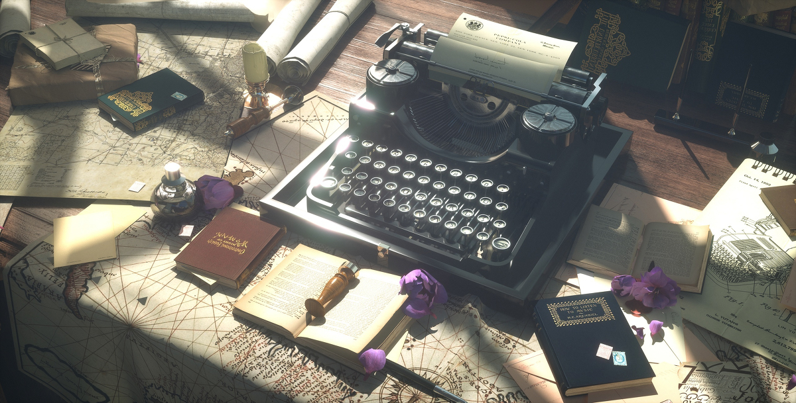
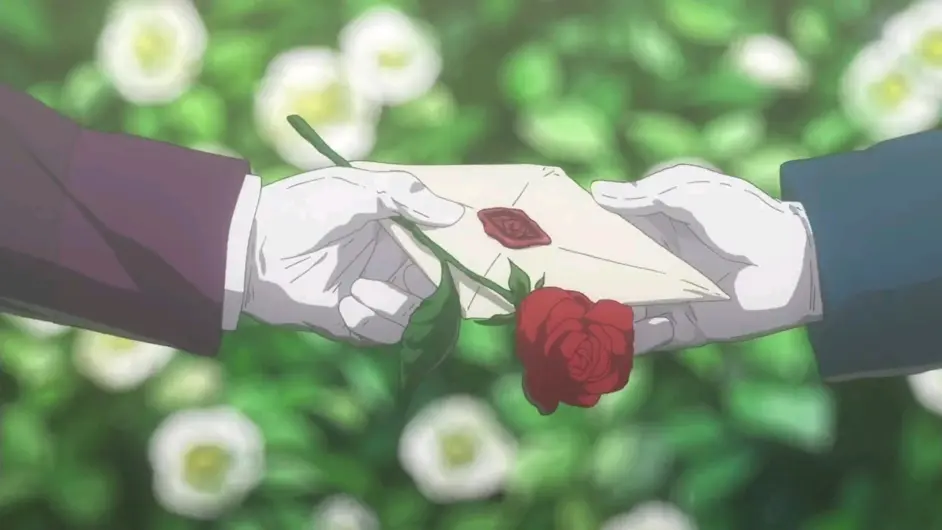

Violet's Garden of Eternity is an anime with a strong anti-war message that aired in January 2018.
The story is about a young girl (Violet) who gradually comes to know her feelings from a killing machine.
The story progresses step by step, from memories of the war at the beginning, to writing letters as a "doll"(help the customer write the letter)
to experiencing various things later on, and finally understanding human feelings.

In the midst of the war, searching for the hidden truth in the words spoken by someone important.
When the war is over, she is given the job of having to deliver someone's thoughts in words.

The title Violet's Garden of Eternity is actually the language of the flower, Violet is the violet, and the violet represents eternal love, so the title could also be "Violet's Love Eternal"
with a lot of piano, violin this instrument, with similar to the story of the Victorian era environment.Having aImmersive experience